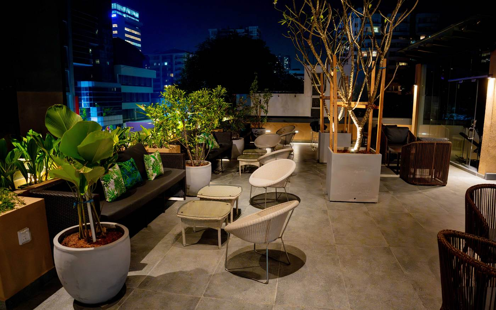
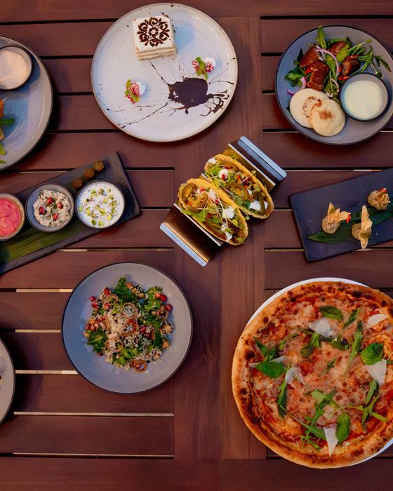
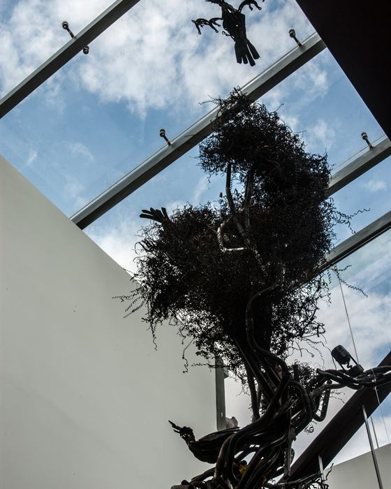
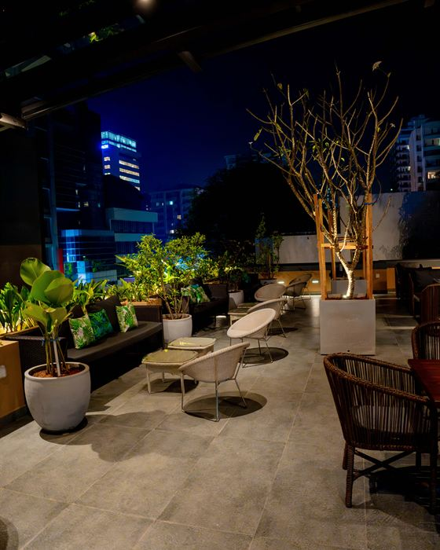
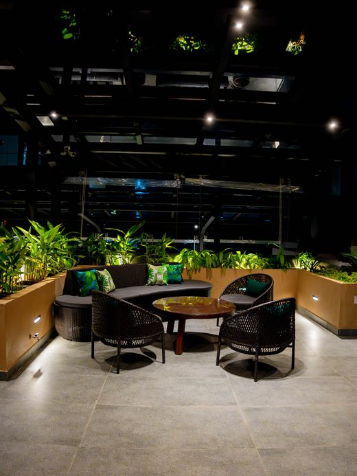

Colombo Court Experiences
Colombo, your way.
Discover the city through its food, history, art, neighbourhoods and everyday moments.
Six ways into the city.
-

If we had two days
A two-day plan from our local team.
-

Where we eat
Hoppers, crab at lunch, and the short list in between.
-

Art and culture
Bawa, the museum, and the Colombo that hangs on walls.
-

Where we shop
Handloom, ceramics and tea worth the suitcase space.
-

Colombo after dark
Where to go in the evening, and how to get back.
-

Hidden Colombo
The train, the early temple, the city before breakfast.
Everything on this page is a short tuk-tuk ride from Alfred House Avenue in Colombo 3. The airport is about 35 km away, forty-five minutes to an hour by car.
If we had two days.
-
Day one, morning
Gangaramaya, then Fort
Start early at Gangaramaya Temple, with shoulders and knees covered and shoes left at the door. Walk on to Seema Malaka beside Beira Lake, then take a tuk-tuk to Fort. Explore the restored Dutch Hospital and finish with a look at the old lighthouse clock tower.
-
Day one, afternoon
Pettah, then the pool
Head into Pettah while the streets are still full of morning energy. See the red and white Jami Ul-Alfar Mosque, wander through the market streets and leave before the afternoon heat sets in. Then return to Colombo Court for a swim, something cold to drink and a slower afternoon.
-
Day one, evening
Galle Face at sunset
Arrive at Galle Face Green towards 17:30, when the food carts begin to fill the seafront and families come out for their evening walk. Try an isso wade or something from the kottu stalls, find a place beside the sea and stay as the sun disappears over the Indian Ocean.
-
Day two
The square, museum & rooftop
Begin at Independence Square while the city is still quiet, then stop for coffee at the Arcade nearby before visiting the National Museum. Return to the hotel for a swim or treatment in the afternoon, then head upstairs to Cloud Café & Bar as evening arrives, with Colombo lighting up below.
The full plan, with the practical notes on dress, money and traffic, is in our two-day guide. Not sure whether you need the second day? Here is how we would decide.
Where we eat
Hoppers at breakfast, crab at lunch.
Colombo rewards curiosity when it comes to food, from street carts beside the sea to restaurants tucked into restored colonial buildings. These are a few places and experiences we would suggest to friends looking to taste the city.
- Galle Face Green: Come towards evening for isso wade, kottu and other street food beside the sea.
- The Dutch Hospital: A restored Fort landmark with several restaurants, including the well-known Ministry of Crab.
- Arcade Independence Square: A collection of restaurants and cafés under one roof, making it an easy choice for groups.
- A Sri Lankan breakfast: Try hoppers, string hoppers or kiribath with sambol for a proper start to the day.
At the hotel, both restaurants welcome non-residents. Amber Poolside serves breakfast from 07:00, followed by lunch and afternoon high tea, while Cloud Café & Bar opens from 17:30 for rooftop dining and drinks.
Art and culture
The Colombo that hangs on walls.
Some of the city’s most interesting art and architecture is close to the hotel. Geoffrey Bawa, one of Sri Lanka’s most influential architects, had his office on Alfred House Road. The building is now home to The Gallery Café, making it a natural stop for lunch and a little architectural history.
- Number 11: Bawa’s former home in Colombo 3, available to visit by appointment.
- The National Museum: Home to important collections of Sri Lankan history, including the throne and regalia of the Kandyan kings.
- The Lionel Wendt Art Centre: A long-standing home for exhibitions, theatre and music.
- Gangaramaya Temple: A fascinating collection of religious objects, gifts and curiosities gathered over generations.
Back at Colombo Court, look out for the hotel’s sculptures, created from scrap metal by Sri Lankan artist Prageeth Manohansa. They are part of the hotel’s own story and character.
Where we shop
Handloom, ceramics and tea to take home.
Colombo is a good place to find things made here, whether you are looking for colourful textiles, handmade ceramics or something small to remember the trip by.
- Barefoot: Head to Galle Road for colourful handloom cotton, a gallery and a café tucked behind the shop.
- Paradise Road: Well-made homeware, ceramics and gifts with a distinctly Sri Lankan character.
- Laksala: A good place to browse Sri Lankan crafts at fixed prices, particularly when buying gifts.
- Pettah: Visit in the morning for fabric, spices, market finds and the energy of one of Colombo’s busiest neighbourhoods.
Colombo after dark
Colombo in the evening.
A good Colombo evening can begin beside the sea and finish above the city. Galle Face Green comes alive at dusk, the Lotus Tower begins to glow across the skyline and the air becomes cooler as the evening settles over Colombo 3.
- Cloud Café & Bar: Our rooftop restaurant and bar opens from 17:30, with last orders at 23:30.
Sunday evenings tend to be quieter. On Poya days, Sri Lanka’s monthly full moon holidays, alcohol is not served in the hotel, so it is worth checking your plans ahead of time. For the journey back, use a metered tuk-tuk, PickMe or Uber, or ask our Front Office team to arrange a vehicle.
Before you head out.
What are the best things to do near Colombo Court Hotel & Spa?
Start with the places closest to the hotel. Visit Gangaramaya Temple and Seema Malaka on Beira Lake, explore Independence Square and the Arcade, spend an evening at Galle Face Green, or head into Fort and Pettah for a different side of the city. The National Museum is also an easy trip from Colombo 3.
How many days do you need in Colombo?
Two days gives you enough time to experience many of Colombo’s highlights without rushing. You can explore Gangaramaya, Fort and Pettah on one day, then visit Independence Square and the National Museum on another. If you are arriving after a long flight, one night is also worth keeping slow.
What should I wear to visit a temple in Colombo?
Dress modestly when visiting temples. Your shoulders and knees should be covered, so avoid sleeveless tops, short skirts and shorts. Loose trousers, long skirts or dresses and shirts with sleeves are good choices. White or light-coloured clothing is common among devotees, particularly on religious days, but visitors do not need to wear white. Shoes and hats should be removed before entering temple buildings or sacred areas.
What is a Poya day in Sri Lanka?
Poya is the monthly full moon day and a public holiday in Sri Lanka, with particular significance for Buddhists. Licensed premises cannot sell or serve alcohol on full-moon days, although restaurants and other businesses may continue operating without alcohol service. It is worth checking the Poya date before planning an evening out.
What is the best way to get around Colombo?
For short journeys, metered tuk-tuks are an easy way to get around. PickMe and Uber are also widely used and show the fare before you book. We can arrange a car and driver through the hotel, including private airport transfers. Speak with our Front Office team for current rates and arrangements.
When is the best time to visit Galle Face Green?
Go in the late afternoon, from around 17:30, when the food carts begin setting up and Colombo comes out for its evening walk. The sea breeze makes it a pleasant time to explore, and staying until sunset gives you the best part of the experience.
Where should I buy Ceylon tea in Colombo?
For a more interesting tea experience, visit a reputable tea merchant in the city rather than leaving your shopping until the airport. Ask about single-estate Ceylon teas and choose one that suits how you like to drink your tea. If you are taking tea home, ask the shop to vacuum-pack it for travel.
Can I take the coastal train from Colombo?
Yes. The Coastal Line runs south from Colombo, with both Colombo Fort and Kollupitiya among its stations. The route continues along the coast towards destinations including Mount Lavinia, Bentota and Galle. For the classic experience, take a daytime train and sit where you can see the coastline. Check the current timetable before travelling, as services and timings can change.
Can I eat at Colombo Court without staying there?
Yes. You do not need to be a hotel guest to dine with us. Amber Poolside welcomes guests throughout the day, while Cloud Café & Bar opens in the evening for rooftop dining, cocktails and city views. Reservations are recommended for busy evenings and special occasions.
